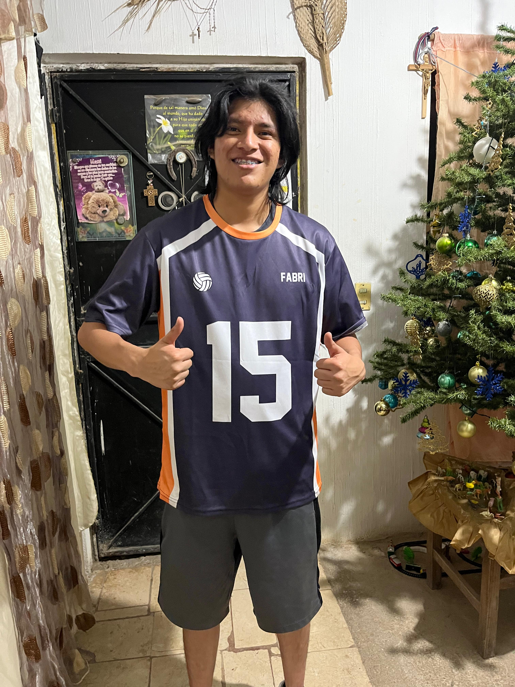
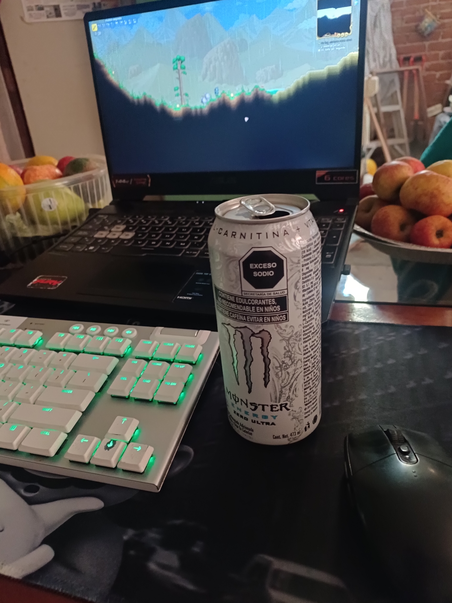
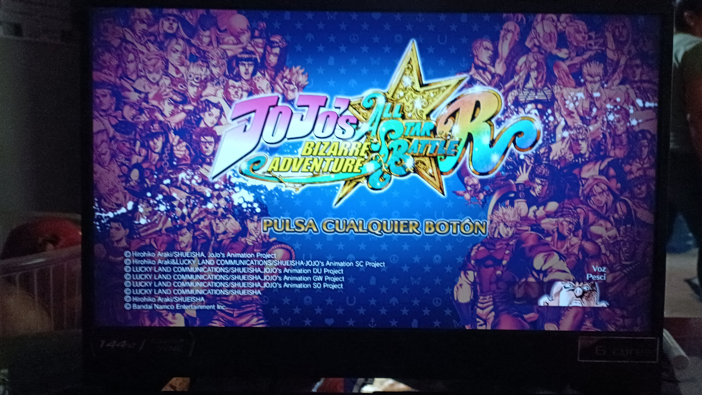
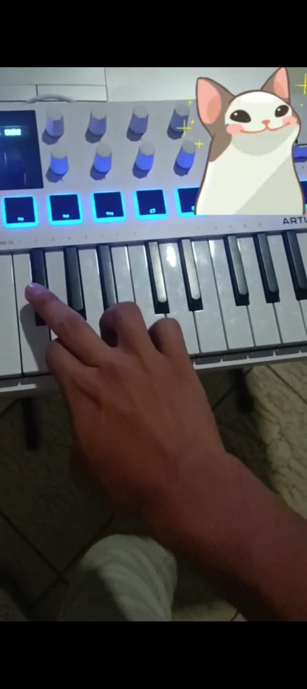
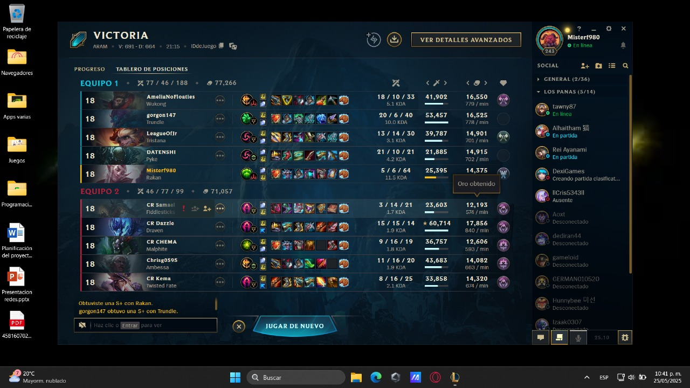
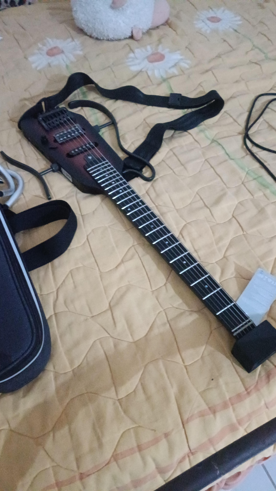
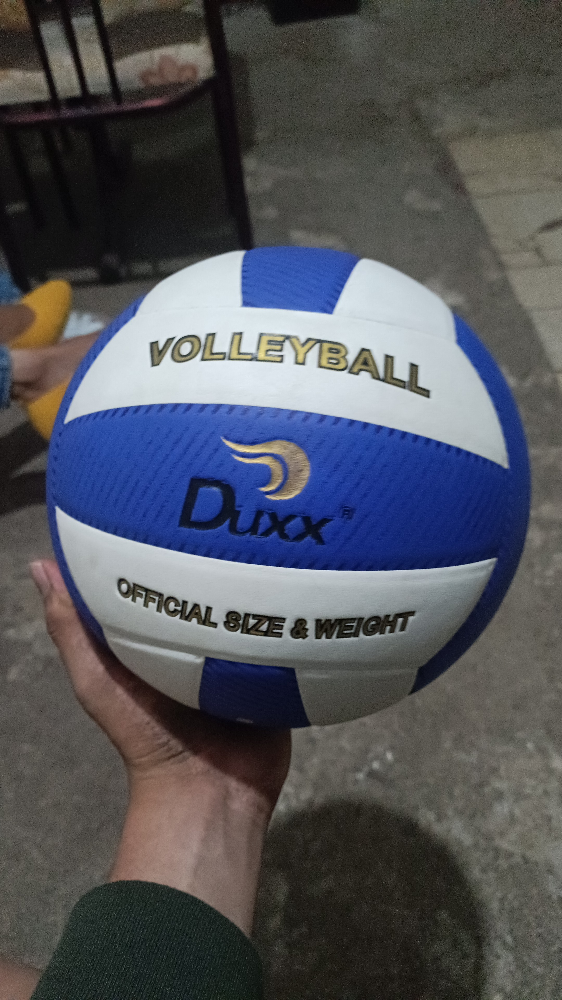

Lo que me gusta hacer
"Aprendiz en todo, Maestro en nada" esa frase me gusta mucho porque me identifico con el que me gusta hacer un poco de todo el intentarlo por lo menos, aunque aun faltan mas cosas que quiero probar y aprender.
uno de mis hobbies son los videojuegos me encanta jugar, mi favorito es league of legends, pero tambien juego muchos tipos de videojugos, por ejemplo me gusta mucho jugar isaac, counter, juegos antiguos y tambien me estaba pasando el howards legacy aun recuerdo que los primeros que jugue fueron de las maquinitas de palanca, como el metal slug,el KOF, neo bomberman son una cosa de lo que mas disfruto hacer.
Recientemente me meti a unas clases de voleibol el cual me gusta mucho ya que me gusta hacer ejercicio y es un deporte que practique en primaria igual que el basquet es divertido y me gusta el ir porque tambien convivo con viejos amigos.
Me gusta tambien realizar ejercicio, antes iba al gimnasio pero cuando deje de ir empece a hacer calistecnia en mi casa para estar en buena forma porque megusta mucho salir a caminar, correr o subir cerros sjsj
Siempre me gusto mucho la musica tambien hago muchas cosas con musica de fondo, en la secundaria me meti a un club para aprender a tocar la guitarra, luego lo deje por un tiempo hasta de nuevo como en la universidad me junte con un amigo que me invito a meterme a su banda y a veces tenemos juntadas para practicar y parender, me gusta muhco aunque a veces no practico mucho de hecho por eso me compre una guitarra electrica con la que practico caundo tengo tiempo libre
Fotos de esos hobbies






